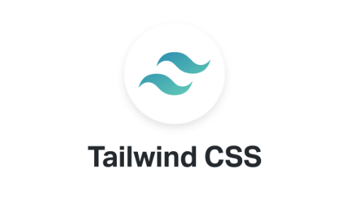

A website using Tailwind CSS

I've recently developed a fully responsive website using Tailwind CSS, which adapts seamlessly between desktop 🖥️ and mobile 📱 devices. This project includes various essential sections:
* Navbar 🧭
* Hero Section 🦸♂️
* Main Section 📄
* Pricing Section 💸
* Stories Section 📖
* Footer Section 🚧
What I Learned:
Throughout this process, I've gained hands-on experience with Tailwind CSS, mastering:
🛠️ Tailwind setup and configuration
✒️ Typography, font family, and text sizing
🎨 Custom font classes and color schemes
📏 Precise padding and margin adjustments
🗺️ Effective layout techniques and responsive classes
🎯 Proper alignments for both light and dark modes
🔧 Extending and overriding configuration options
📦 Extracting styles as reusable components
System Video & Images
| Watch system recording in LinkedIn | Click Here |
|---|